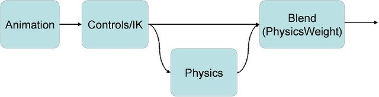
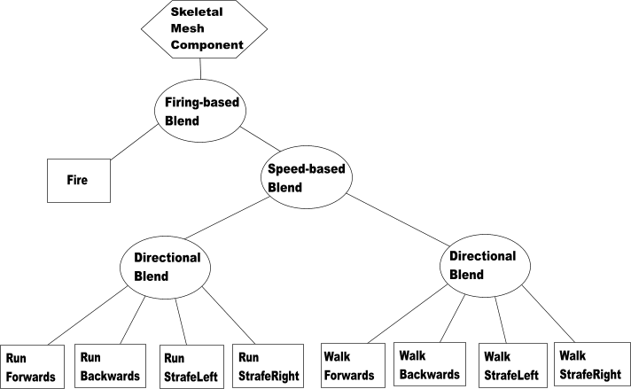
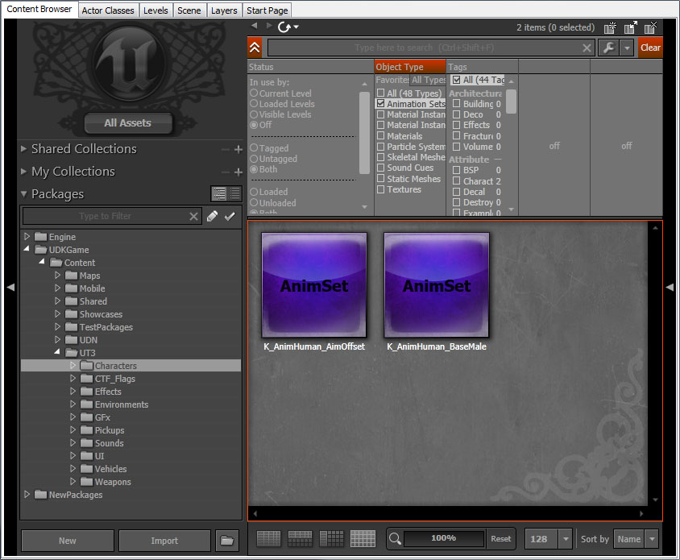

UDN
Search public documentation:
AnimationOverview
日本語訳
中国翻译
한국어
Interested in the Unreal Engine?
Visit the Unreal Technology site.
Looking for jobs and company info?
Check out the Epic games site.
Questions about support via UDN?
Contact the UDN Staff
中国翻译
한국어
Interested in the Unreal Engine?
Visit the Unreal Technology site.
Looking for jobs and company info?
Check out the Epic games site.
Questions about support via UDN?
Contact the UDN Staff
UE3 Home > Animation > Animation System Overview
UE3 Home > Animators > Animation System Overview
UE3 Home > Cinematic Artist > Animation System Overview
UE3 Home > Animators > Animation System Overview
UE3 Home > Cinematic Artist > Animation System Overview
Animation System Overview
Overview
The Unreal Engine 3 animation system adds motion to rendered objects and entities. Bone animated meshes are called Skeletal Meshes. Unlike Static Meshes (which can only be animated via Matinee, Materials via World Position Offset), Skeletal Meshes have a set of bones to make up a skeleton. These bones are used to drive the motion of the mesh and placement of objects on a mesh. There are four parts to the animation system - playback of key framed animation data, blending of animations together, controlling bones and blending of morph targets.
Pipeline
The animation system is part of the Unreal Engine 3 pipeline. First, normal animation is processed (blending animations). Bone controllers (such as inverse kinematics) are then applied. Next morph targets are applied. Finally, the physics for the skeleton. The physics subsystem then processes the remaining physics, and the graphics subsystem then renders everything. 
Workflow
Typically, a programmer and an animator will work together to produce the needed animation content. The animator will set up a skeleton and label bones according to an agreed-upon convention. The programmer will tie it all together based on the pipeline (classes, functions, flags, etc.).Animated Meshes
In Unreal Engine 3, animated meshes are called Skeletal Meshes, as bone-based skeletal animation is the mechanism for driving animation for objects in the game. Previously in Unreal Engine 2 and Unreal Engine 1, there was also vertex-based animation. Key framed vertex animation is no longer supported.Animation Blending
Unreal Engine 3 uses the idea of 'blend trees' to blend together multiple sources of animation data. This method allows you to cleanly organize the way in which a number of animations are blended together, and lets you easily add more animations in predictable ways as your game develops.
Blend Tree Overview
Here is a simple animation blend tree:  Trees are made up of a tree of nodes. There are two main classes of node:
- Blend Nodes (Circles) - These take a set of children and blend them together in a certain way. The base class for blends is AnimNodeBlendBase.
- Data Nodes (Boxes) - The leaves of the tree, have no children but actually generate bone transforms.
Building Blend Trees
Animation trees are built using the AnimTree Editor, which is part of Unreal Editor. You can create a new AnimTree using the Content Browser, and then double-clicking on it will open the AnimTree Editor viewing the new, empty tree. You can then tell a Skeletal Mesh Component to use your AnimTree in its defaultproperties block:
defaultproperties
{
Begin Object Class=SkeletalMeshComponent Name=SkeletalMeshComponent
SkeletalMesh=SkeletalMesh'BigCritter.CritterMesh'
AnimSets(0)=AnimSet'BigCritter.CritterAnims'
AnimTreeTemplate=AnimTree'BigCritter.CritterAnimTree'
End Object
}
AnimTree Node
The AnimTree node is the default node available when a new AnimTree is made. This is where you will connect your Animation Nodes, Bone Controllers and Morph Nodes. The animation blend nodes and animation sequences will produce the final animation. The next step is to apply the bone controllers. This is done in a single step, therefore the order of bones is important. Let's take the following scenario: The character is using IK to move the arm, and a procedural controller to handle the roll bone of the arm. You will want the IK to be done first, and the roll bone after, so it can reflect the final pose. To solve this, bones can be ordered in three passes.- ComposePrePassBoneNames - Bones and their children to be composed first. Typically IK Bone chains.
- ComposePostPassBoneNames - Bones and their children to be composed last. Typically roll bones.
Animation Playback
AnimSequence
An AnimSequence is a single animation, a collection of key frames, with its associated meta data information such as animation notifies.AnimSet
An AnimSet is a collection of AnimSequences. They live in packages, and can be seen in the Content Browser in the same way as materials, meshes etc.  All AnimSequences in an animation set must have the same number of tracks, and the tracks must refer to the same bones. This should be taken care of for you when you import a FBX file in the AnimSet Editor.Bone To Track Mapping
Tracks in the AnimSet are related to bones in the skeletal mesh by name. This is because you may want to play the same animation set on different skeletal meshes which do not have exactly the same number or order of bones. For quick lookup the AnimSet caches a set of AnimSetMeshLinkup structures. These are a mapping table between the bones of a particular skeletal mesh and the tracks of the AnimSet.AdditiveAnimation
AnimSequences by default store the full skeleton animation. But it is also possible to build and use additive animations. Additive Animations are built within the AnimSet editor by substracting two animations. The AnimTree can then use a few nodes to add this additive animation back. Additive Animation can be used as a mean of compression by taking out redundant data (for example walk relaxed and walk aiming, take out the walks, and only keep the relaxed to aim difference as an additive). While a little tricky to manipulate, it can greatly reduce the number of animations used, and the memory they use. Although the Animation will display fine in the AnimSet Editor on its own, in-game it will need to be added to a base pose to look like something. You can add Additive Animations by using the AnimNodeAdditiveBlending node or just by playing them on demand on an AnimNodeSlot. Additive, Target and Base animations all keep references to each other. It is safe to move those animations in different AnimSets, and maintain those references (but not packages). When importing an updated version of either the Target or the Base pose, the editor will prompt the user to rebuild the related additive animations. If you want to update existing data and create those references, you can run the FixAdditiveReferences commandlet.AnimNodeSequence
This is a subclass of AnimNode that knows how to play back key frame data stored in AnimSets. It commonly forms the leafs of your blend tree. The animation sequence you wish to play is specified by name in the AnimNodeSequence. To find the AnimSequence, it will look through the AnimSets array in the SkeletalMeshComponent. The advantage of referencing the animation sequences by name instead of by pointer is that it allows you to use the same tree for completely different meshes/animations. When searching through the AnimSets array, it will start from the end and work backwards until it finds an AnimSet with an AnimSequence with that name. This allows you to override a particular sequence by adding a new AnimSet containing a sequence with the same name later in the array.AnimGroups
When managing a lot of different animations together, there is quickly a need to organize these animations and manage them at a higher level. To help with this, the animation system uses a concept of AnimGroups. With AnimGroups, it is possible to synchronize a bunch of nodes together, have only the most important node of the group trigger notifications, and adjust the play rate of all these nodes globally. It can be a combination of these options, not all nodes have to be synchronized.Synchronization
This was done before using a special node called AnimNodeSynch. This has been since integrated into this AnimGroup system. And so it is encouraged to remove the AnimNodeSynch node if you are currently using it in any of your AnimTrees. The reasoning behind animation synchronization, is to be able to synchronize animations of different lengths together. This is especially useful, for example, for movement cycles. Transitioning between walking and running seamlessly. The idea is to have the animations relatively synchronized. For example left foot down at 0%, and right foot down at 50% of all movement cycles. Now, if we keep the walk and running cycles synchronized together, relatively, we can change the play rate of each depending on the velocity of the character, and transition from either walk cycles seamlessly.Notifications
When transitioning between similar animations, there is also the problem of handling notifications. For example foot steps with movement animations. When transitioning between different cycles, and using the weight threshold based system to trigger notifies, you can end up with cases where no notifies are fired at all (or in some cases, several can be triggered at once). What we really want is the most important animation of a group to be in charge of triggering notifies. Use AnimGroups to solve this problem.Group play rate control
Finally, AnimGroups also allow to control the play rate of the animations at a group level. Note that this is in addition to the per animation node rate. So animation nodes can have different/variable rates, and the group rate will scale all animation nodes of that group on top of their individual play rate.Setup
To create a new group, select the AnimTree node (root node of the blending tree). Expand AnimGroups, and add a new entry. Type in the desired name for your group the in 'GroupName' property. The RateScale property is to scale the global play rate of this group. Then, select the AnimNodeSequence node that you'd like to add to this group. Expand its Group section. You'll find the following properties:- Force Always Slave - Node will be synchronized, but never picked as a master node.
- Synchronize - True by default, node will be synchronized. Uncheck if you do no wish this node to be synchronized.
- Synch Group Name - Name of group this node belongs to. Set it to the same group name that you've created in the AnimTree AnimGroups array.
- Synch Pos Offset - If this animation was not authored relatively synchronized with the others (left foot, right foot inverted), then it's possible to offset the animation to make it match. Offset is relative position, 0.f to 1.f.
Under the hood
The grouping system, forces all nodes in the group to be updated in a second pass, after all nodes have been ticked. This is so all nodes have an up to date weight in the blending tree. Then each group will look for two masters. One for synchronization, and one for notifications. The reason for having two masters is that not all nodes can be synchronized, and not all nodes can trigger notifies. So the leaders in each category are the most relevant nodes (the ones with the highest weight in the tree, able to either synchronize or trigger notifications). Once the master nodes have been picked, all the group nodes are updates. Nodes that need to be synchronized will be, and nodes that need to trigger notifies will also be.Unrealscript functions
- SetAnimGroupForNode(AnimNodeSequence SeqNode, Name GroupName, optional bool bCreateIfNotFound) - Add a node to an existing anim group.
- Seq Node - Animation sequence node to add.
- Group Name - Animation group name to add the animation sequence to.
- Create If Not Found - Creates the animation group if one was not found.
- GetGroupSynchMaster(Name GroupName) - Returns the master node driving synchronization for this group.
- Group Name - Animation group name.
- GetGroupNotifyMaster(Name GroupName) - Returns the master node driving notifications for this group.
- Group Name - Animation group name.
- ForceGroupRelativePosition(Name GroupName, float RelativePosition) - Force a group at a relative position.
- Group Name - Animation group name.
- Relative Position - Relative position to set the group to.
- GetGroupRelativePosition(Name GroupName) - Get the relative position of a group.
- Group Name - Animation group name.
- SetGroupRateScale(Name GroupName, float NewRateScale) - Adjust the Rate Scale of a group.
- Group Name - Animation group name.
- New Rate Scale - Rate scale to set the group to.
- GetGroupRateScale(Name GroupName) - Get the Rate Scale of a group
- Group Name - Animation group name.
- GetGroupIndex(Name GroupName) - Returns the index in the AnimGroups list of a given GroupName. If group cannot be found, then INDEX_NONE will be returned.
- Group Name - Animation group name.
Root Motion
Root motion allows you to extract acceleration / velocity and rotational data from animation to feed into Unreal Engine 3's physics system. See the Root Motion page for more information.Bone Controllers
After animation has been extracted and blended together, bone controllers can be applied, such as IK (Inverse Kinematics). See the Skeletal Controllers page for more information on this step and the type of nodes you can use.
Physical Animation
For more information on combining PhysX and animation, see the Physical Animation page.
FAQ
Non-uniform bone scaling
- We do not support non-uniform bone scaling, but for the licensee who would like to implement, attaches files can be used to help.
Useful Console Commands
- show bones - Shows bones locations used to render skeletal mesh.